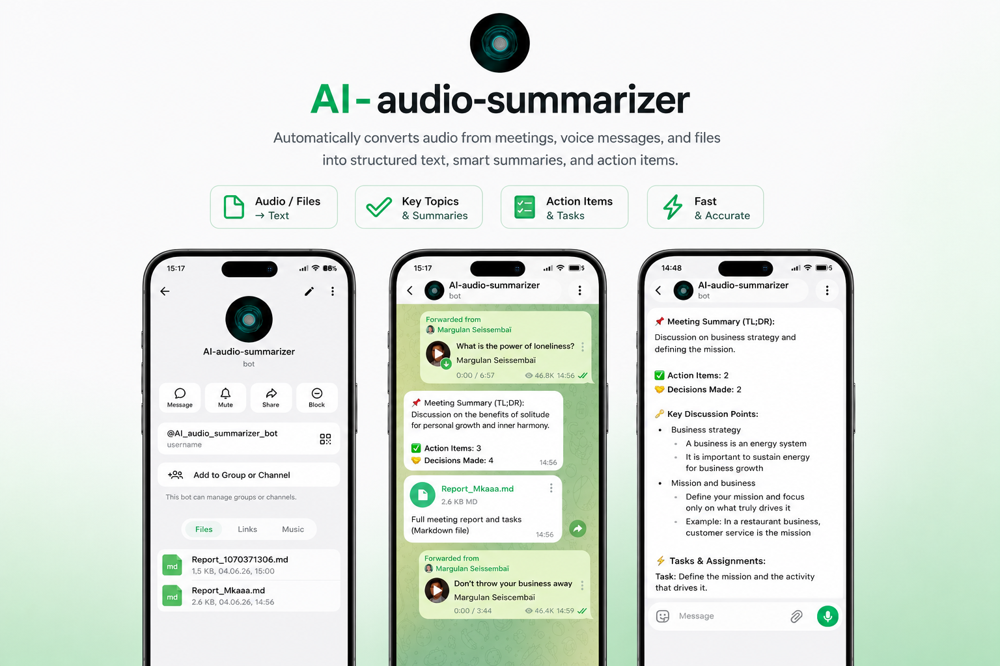

LLM / Audio Processing
AI Audio Summarizer
Python · Groq Whisper · Llama 3.3 · PyDub
❓ PROBLEM:
Processing lengthy customer calls and meeting recordings manually leads to lost information, human error, and massive time sinks for analytics teams.
🖌 SOLUTION:
Developed a robust audio processing pipeline integrating Groq Whisper for fast transcription and Llama 3.3 for semantic summarization. Engineered a multi-stage chunking system using PyDub to handle massive files without memory leaks.
🎯 RESULTS:
• 90% reduction in transcription time
• High-accuracy semantic extraction
• Reliable processing of 2GB+ audio files
PythonGroq WhisperLlama 3.3PyDub
View on GitHub →
